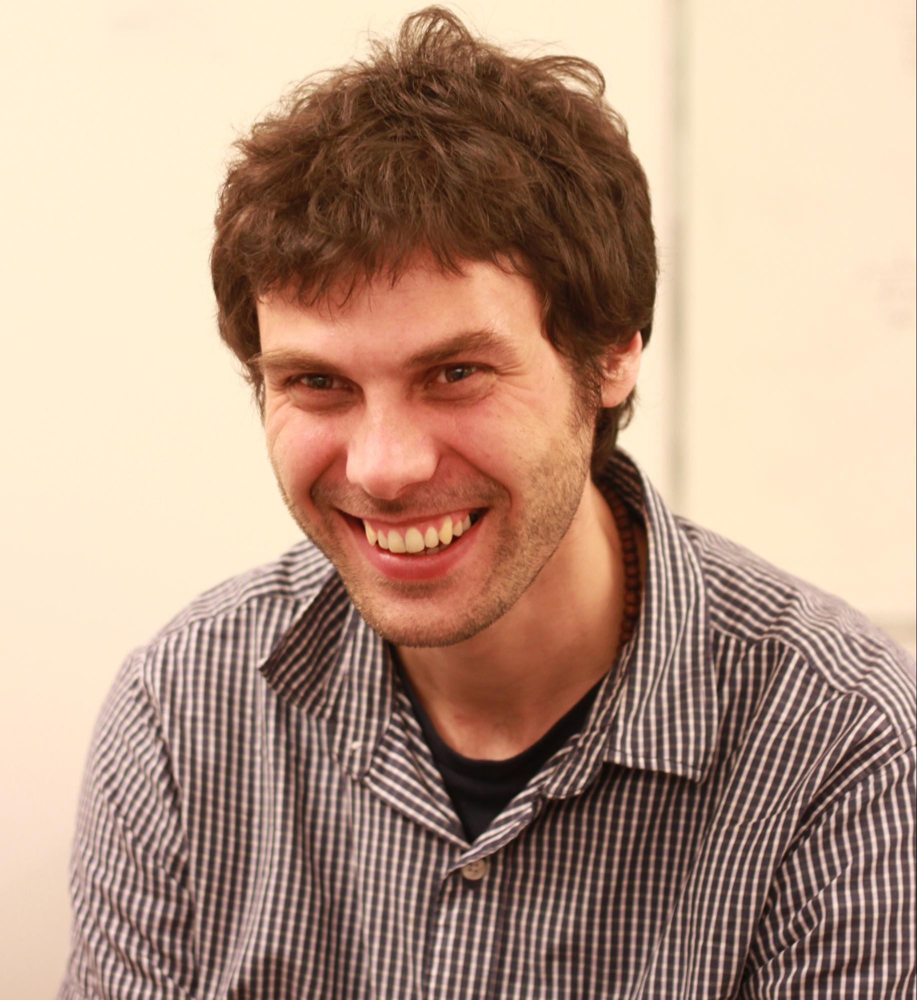

Keynote Speakers
Josef Sivic (Josef Šivic)
Czech Institute of Informatics, Robotics, and Cybernetics. Czech Technical University in Prague, Czech Republic

Bio: Josef Sivic is a distinguished researcher at the Czech Institute of Informatics, Robotics and Cybernetics (CIIRC) at the Czech Technical University in Prague, where he leads the Intelligent Machine Perception group and the ELLIS Unit Prague. He is currently on leave from a senior researcher position at Inria Paris, where he remains an external collaborator with the Willow team. Josef received his PhD from the University of Oxford in 2006 under the supervision of Professor Andrew Zisserman, followed by a postdoctoral appointment at MIT’s CSAIL with Professor William Freeman, and obtained his habilitation degree from École Normale Supérieure in Paris in 2014. His research lies at the intersection of computer vision, machine learning, and robotics, with a particular focus on learning visual representations from large-scale, weakly supervised, and multimodal data. He has made influential contributions to visual recognition, image and video retrieval, semantic segmentation, visual localization, geometric matching, and 3D understanding, as well as to learning from videos, narrated data, and demonstrations for embodied and robotic tasks. His work has been published in top venues such as CVPR, ICCV, ECCV, NeurIPS, and TPAMI. He has an outstanding publication record, with an h-index of 82 and roughly 60,000 citations.
Title: TBA
Abstract: TBA
Allan Hanbury
TU Wien, Complexity Science Hub Vienna, Austria
Bio: Allan Hanbury is Professor for Data Intelligence, head of the Data Science Research Unit, and Faculty Representative (responsible for financial affairs and internationalisation) at the Faculty of Informatics, TU Wien, Austria. He is also faculty member of the Complexity Science Hub Vienna. He was scientific coordinator of the EU-funded Khresmoi Project on medical and health information search and analysis, and is co-founder of contextflow, the spin-off company commercialising the radiology image search technology developed in the Khresmoi project. He is coordinator of DoSSIER, a Marie Curie Innovative Training Network, educating 15 doctoral students on domain-specific systems for information extraction and retrieval. He also coordinated the EU-funded VISCERAL project on evaluation of algorithms on big data, and the EU-funded KConnect project on technology for analysing medical text. He is author or co-author of over 180 publications in refereed journals and refereed international conferences. He contributes to research and innovation strategy development in Austria and Europe, and regularly gives talks on topics related to his research. He has an outstanding publication record, with an h-index of 53 and roughly 16,000 citations.
Title: TBA
Abstract: TBA
Miroslav Krajicek (Miroslav Krajíček)
Goal Sport Technology, Czechia
Bio: Miroslav Krajíček is Head of Development at Goal Sport Technology, a Czech company that has built video officiating and venue-control systems for stadiums since 2006. Its FIFA-certified solutions, including GS Referee and VOL, run in 200+ arenas across 31 countries, from Tottenham Hotspur Stadium and Old Trafford to national federations in Brazil, Slovakia, Finland, the Faroe Islands, and others. Miroslav joined Goal Sport in 2022 as Computer Vision Team Leader, taking its offside detection technology through FIFA Quality certification before becoming Head of Development in 2026. He came to sports technology from autonomous systems: at ARTIN, he worked on the first self-driving car project in the Czech Republic and was part of the winning team in the Udacity "Image-Based Localization" challenge; at Roboauto, he led computer vision engineering for autonomous ground vehicles and trains. He holds a bachelor's and master's degree in Computer Graphics from the Faculty of Informatics, Masaryk University, where his thesis work covered calibrated-camera point tracking and similarity methods for 3D motion recognition.
Title: From Calibration to Kickoff: Camera Parameter Estimation for Virtual Offside Line
Abstract: Placing the virtual offside line accurately depends on knowing all intrinsic and extrinsic camera parameters. Calibration happens within a specified timeframe, without knowledge about the camera's position, type, or lens specifications, without a calibration rig, and sometimes with no prior knowledge of pitch size. In this talk, we describe the practical camera calibration problem behind Goal Sport's VOL (Virtual Offside Line) system. It estimates the distortion, depth offset, and camera position/orientation directly from pitch geometry visible in the broadcast feed itself, without dedicated calibration targets. We present our current work on modeling lens distortion and depth offset as functions of focal length via a polynomial parametrization, enabling a single model to generalize across zoom levels. We share what has worked, what hasn't, and open problems around robustness across stadiums, lighting, and camera hardware — a real-world case study in fast, constrained geometric estimation under production deadlines.